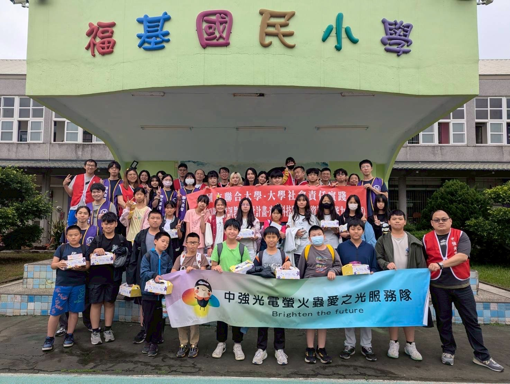
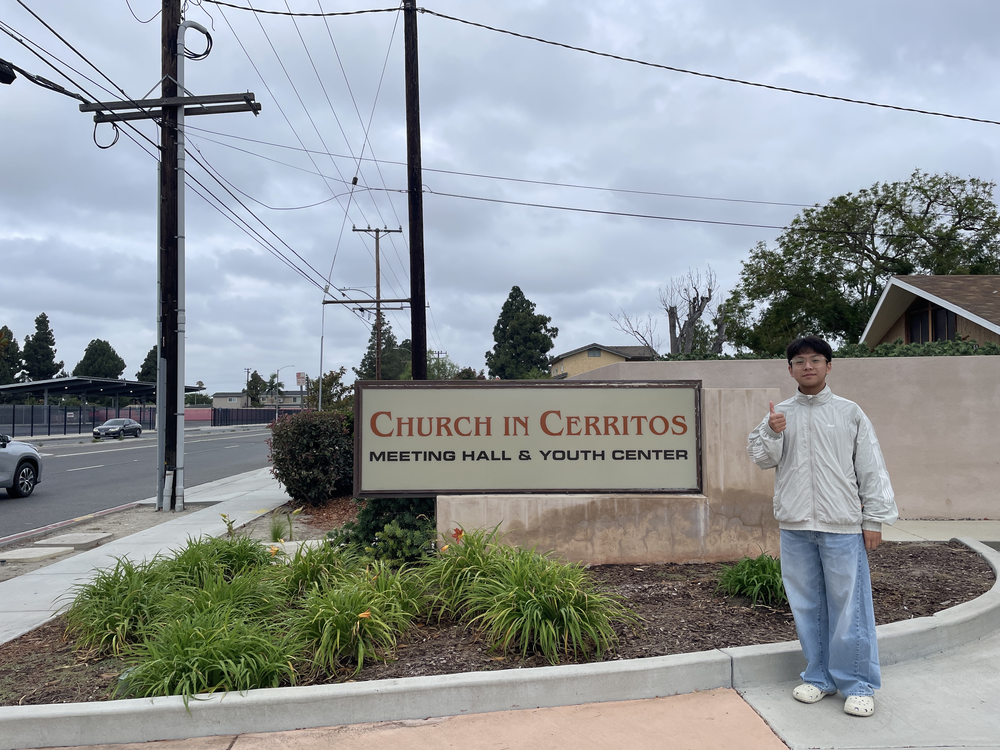

Experiences & Memories
課外經歷與成長
除了學業與專案實作之外，我也透過志工服務、社團參與與海外旅程，學習如何在真實情境中與人合作、表達、規劃與承擔責任。 這些經歷不只是大學生活的片段，也逐漸形塑了我對團隊、溝通、世界與自我成長的理解。

資訊志工 ‧ 偏鄉陪伴與資訊教學
透過資訊教學陪伴偏鄉學童，在實際互動中學習如何把原本熟悉的知識轉化為他人能理解的內容， 也讓我重新看見教育、陪伴與資源落差背後的真實意義。
社團幹部 ‧ 團隊協作與活動規劃
在社團中擔任活動幹部，從活動構想、流程安排到實際執行與溝通協調， 逐步累積團隊合作、專案規劃與臨場應變的能力，也讓我學習如何在不同想法之間找到平衡。

美國夏之旅 ‧ 第一次飛出亞洲
第一次離開亞洲，到從小就嚮往的美國待了一週。這趟旅程讓我真正體會到語言的重要性， 也親身感受到不同的飲食與生活文化。